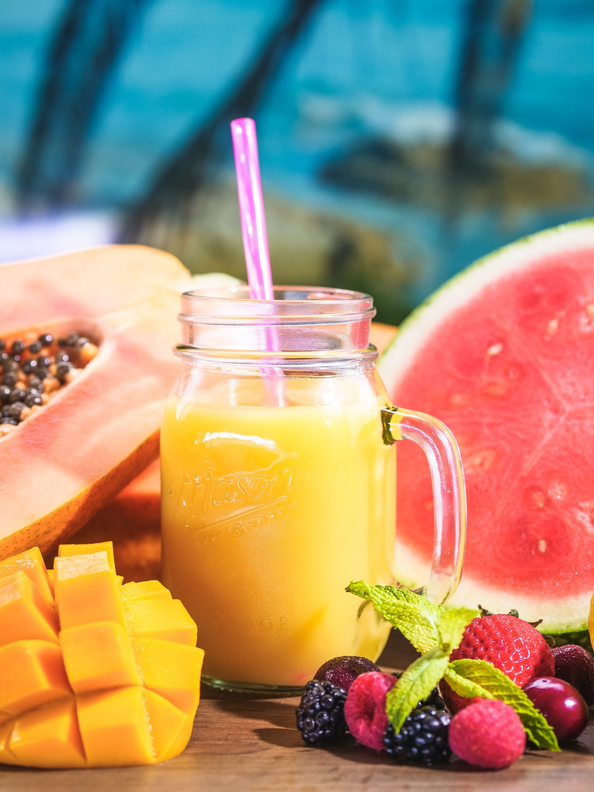

Mango Lemonade

Description
A mango lemonade recipe you'll fall in love with! The perfect drink when it's hot outside. Many of us don't want to fuss with making elaborate recipes so it's been my goal to come up with simple and fast recipes that are both beautiful and delicious. This is why I love this mango lemonade so much.
Ingredients
Simple Syrup:
-
1 cup sugar
-
1 cup water
Mango Lemonade:
-
2 cups chopped mango
-
1 cup water
-
1 cup lemon juice
-
2 cups ice
Steps
Simple Syrup:
-
Combine sugar and water in a saucepan over medium-high heat. Bring to a boil and stir until sugar has dissolved. Remove from heat and allow to cool.
Mango Lemonade:
-
Combine mango and 1 cup water in a food processor until smooth. Pour mango through a strainer into a pitcher. Stir in lemon juice and simple syrup. Mix well.
-
Add ice to the pitcher and serve.